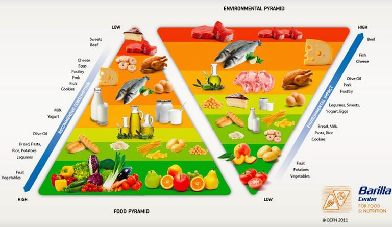

Rhetoric:
The Art of Persuasion
Dr Shane V Crowley
Press down for controls and right to progress
Interacting with the Slides
üì∫Full screen: press the F key
üéÆView video controls: hover cursor over video
üë©‚Äçüé® Draw: click icon or press C
üåàPen colour: press X to cycle and Y to revert
üíÅ Options and Info: click icon or press M
Link to video below:
üëâhttps://youtu.be/NJ-l4yHVX60
Click here for printable version (within reason)üëà
Rhetoric
- Meaning: The study of modes of persuasiding an audience
- History: Traditionally seen as opposed to science and philosophy
- Today: Often used in a pejorative sense to describe a kind of con-artistry ("sophistry")
Science, Philosophy, Rhetoric
The goal of science and philosophy: discover the truth about the world.
Rhetoric does not necessarily share this goal: it relates to persuading someone of a position.
People are persuaded to buy/use technology
The Three Modes
Ethos

An appeal to the character of a person or institution
"By wearing this jacket people will respect me"
"People know this logo indicates quality"
The Three Modes
Pathos

An appeal to individual or collective emotions, like fear or hope "By playing this tune people will feel something" "People know they need to diet before beach season"
The Three Modes
Logos

An appeal to a sense of logic or rationality
"By citing these facts people will know I am trustworthy"
"People know to read the label when buying food"
but I'm a food science student?!
well, you will still:
- Write
articles - Give
presentations - Design
technologies - Have discussions with
sales/marketing
Being Persuasive =
ethos + pathos + logos
... but, we need to be careful about constructing or accepting arguments that are fallacious, which have unreasonable or false appeals to one or more modes.
Character Fallacies
Appeal to Authority
"An expert has just revealed the secret to healthy eating"
Justifying a belief from a single (often false) authority
Ad hominem
"Pollen thinks we should eat more fruits and vegetables but less processes food, that's rich coming from a coastal elite."
Criticising a person's character rather than their argument
Strawperson arguments
"People say food shouldn't be processed, so they want to reverse the agricultural revolution?"
Misrepresenting an opponent's argument so it can be easily dismissed
Emotional Fallacies
Appeal to Guilt or Fear
"Summers coming girls - are you ready for people to see your body?"
Convincing a person or group to do something by inducing negative emotions
Appeal to Popularity
"People ask me why they should buy our product, I point to 100,000 sold per day"
Arguing that people should do things because other people are
False Needs
"The millenial consumer needs the company they buy from to be like a friend"
Mistaking something desirable, trivial or useless as a human need
Logical Fallacies
Appeal to Ambiguity and Equivocation
"Our new yogurt contains no added sugar but you will love its honey encrusted granola"
Exploiting a word having multiple meanings to support a conclusion
Hasty Generalisations
"My cousin tried palio and she looks great, so clearly it works"
Inferring a broad conclusion from a tiny dataset
Faulty Causality
"Hold on, if we ask people to eat insects then what next - people?"
"I'm not coeliac, but the day after I stopped eating gluten someone told me I was glowing"
"This drink makes people happy", "...but it also removes rust, think about it"
Making an inappropriate inference between past and future events
Forced Dichotomy
"He criticises processed food but what does he want - to reverse centuries of development since the agricultural revolutions?"
Artificially constraining an argument to only two possible positions
Stacked Evidence
"In this essay I have given five reasons why people should be vegan, the arguments for meat-eating have not been considered as they are clearly wrong and stupid"
Only discussing the evidence and reasons for one side of an argument
What to do about fallacies
- Acknowledge they exist and avoid them
- Seek them out and learn about them
- Even when they further your interests - don't.
...a fourth mode
Kairos
An appeal to context, timeliness or an opportune moment
Rhetoric, Semiotics and Policy


New Pyramids
New Pyramids
Could you describe the modes/fallacies in this ad?
Could you describe the modes/fallacies in this ad?
Conclusions
- Essays, presentations, ads involve persuasion
- Rhetoric is a toolset for studying persuasion
- Not all persuasion is based on reason alone
Not all existing designs and ads are good (90% of new products fail) Products should be designed so as to persuade towards right action
Next week: Molecules & Structure
shane.crowley@ucc.ie